Jump To
Impact
People with Low or No Vision
ScreenReaders or Text-to-Speech software are software that is used by people with low or no vision. It augments the experience through audible descriptions, along with with keyboard shortcuts it supports navigation. Alt-text is used to hear image descriptions read aloud, this supports an equal experience when reading documents.
People who have Colour-Blindness
When someone has Colour-Blindness, they have difficulty differentiating between certain colour combinations. The most common combination is red and green, though many other colours combinations can be difficult to diferentiate for different people. This can make it difficult to interpret images that rely on colour contrast for meaning. Some people will use Text-To-Speech or ScreenReaders to have the alt-text read aloud to them.
People with Visual Processing Challenges
Some people who have challenges with visual processing experience the moving of shapes and colours. This can ]potentially make portions of the image distorted, interchanging colours and people or other image elements may be switched. This can change the meaning of the image, giving people a different context for images. This can be minimized with the use of alt-text, giving people the ability to hear the context of the image, correcting any visual discrepancies.
Without alt-text, users who are not able to see or interpret images are missing out on context in the document you created. Alt-text is one of the easiest ways to make an impact, this small addition to your images will make a big difference.
Delve In
Part 1: Adding an Image to your Document
Step 1
With your cursor, select the location in the document that you would like your image to be.
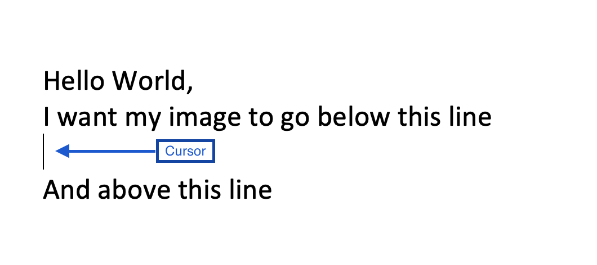Step 2
Select Insert in the ribbon at the top of the MS Word window. This selection will change the icon options in the bottom part of the ribbon.
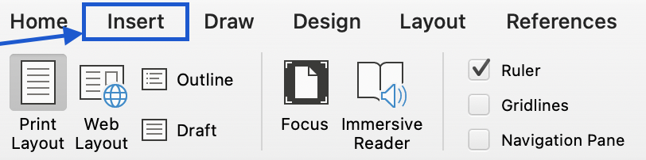Step 3
Select Pictures from the bottom part of the ribbon, this show a drop down menu.
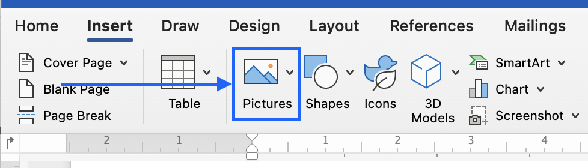Step 4
In this dropdown, select Picture from File… this will open the Finder in a new window.
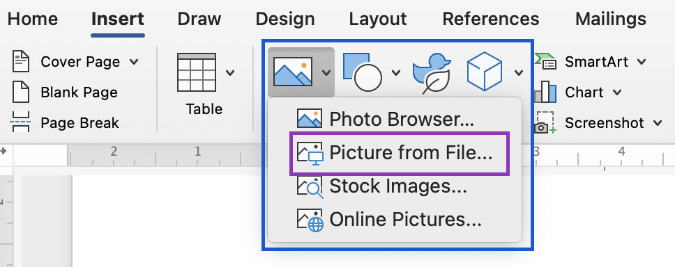Step 5
Navigate to your image in the Finder window, select your image file and click Insert.
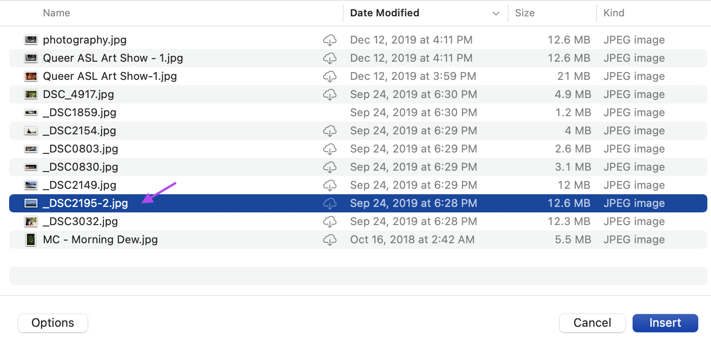Step 6
Congratulations! Your image has been added to your Word Document.
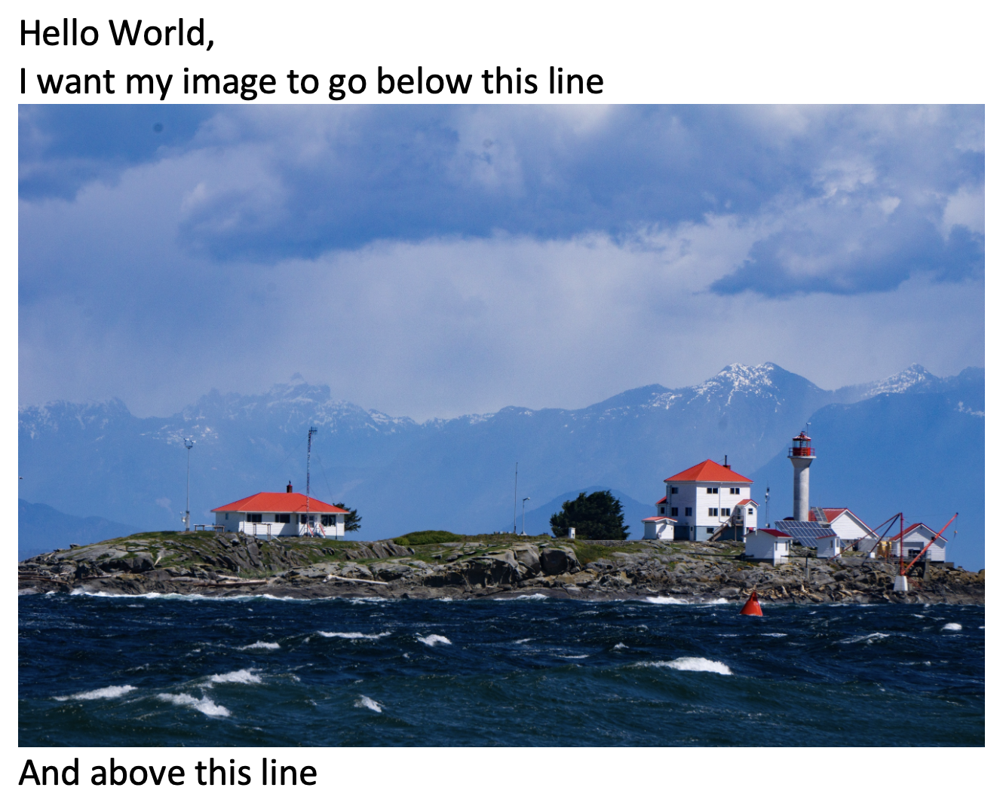Part 2: Writing Meaningful Alt-text
Step 1
The most challenging part for many people is writing Alt-text that is relevant, succinct and beneficial for users. Learning how to write meaningful alt-text is a tutorial on its own. Learn more about Meaningful alt-text in this tutoirial.
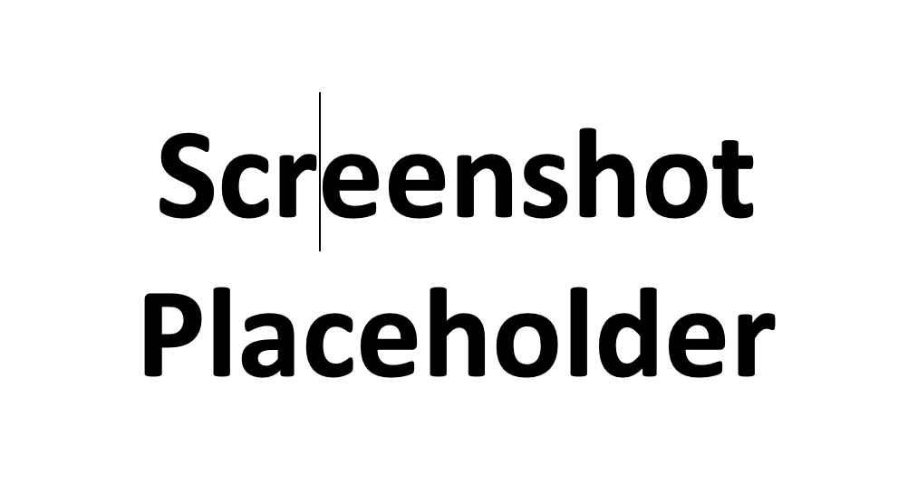Part 3: Add Alt-Text to Your Images
Step 1
Right click on your image (on Macbook trackpads this is a two-finger-side-by-side click). Then select Edit Alt Text opening a sidebar on the righthand side of your MS Word window.
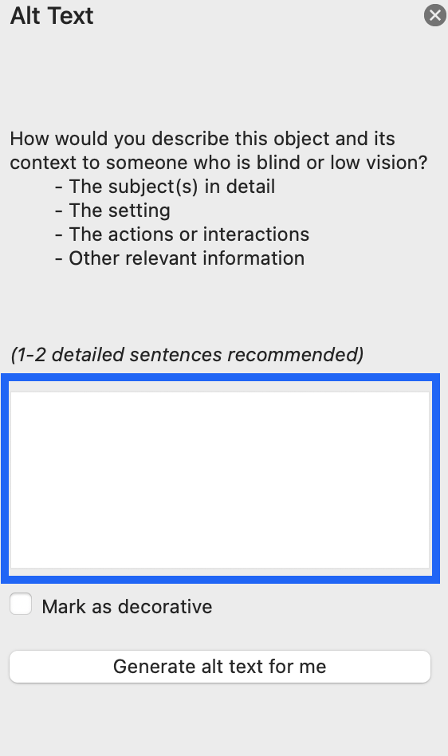Step 2
Ensure that the correct image is selected. This can be confirmed by looking for little white squares at each of the corners. If it is not selected, click on your image to select it.
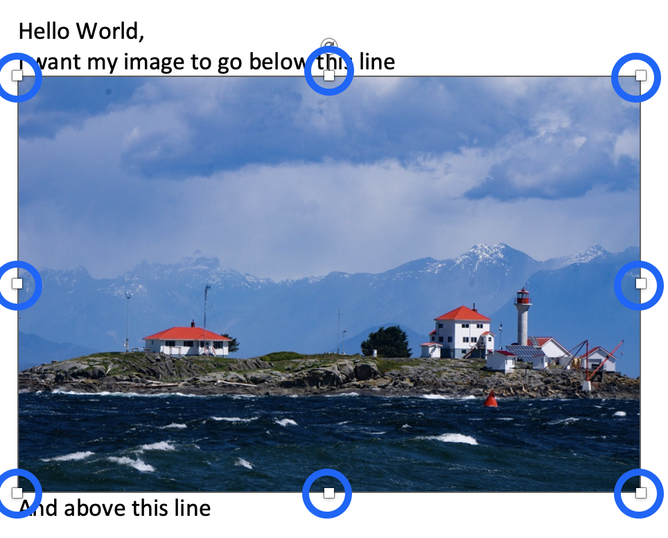Step 3
There will now be a pane on the right hand side and you will see an empty textbox, which is ready for you to add Alt-Text.
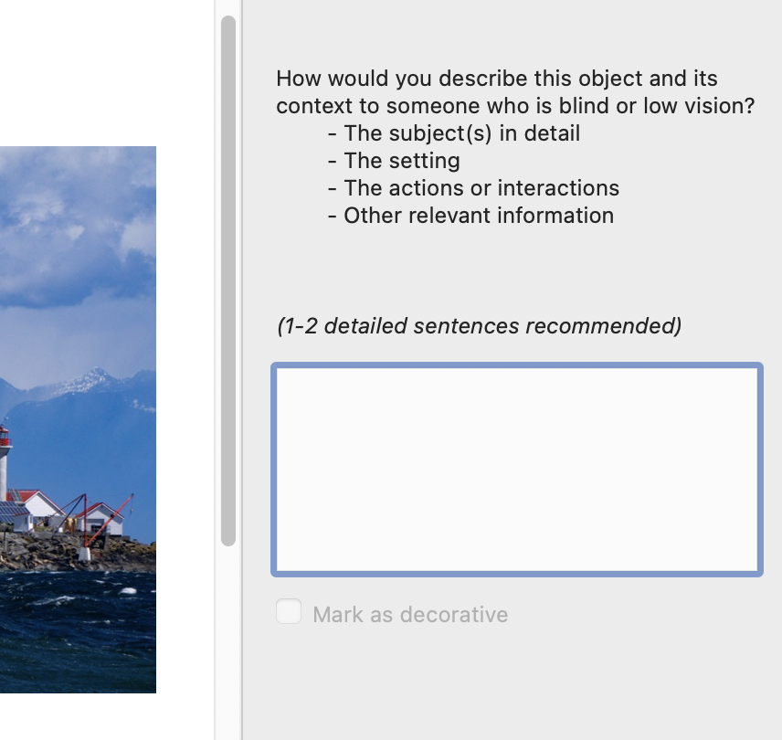Step 4
Add the Alt-text you created in step 2 into this textbox, save your document. You did it! Good Job!
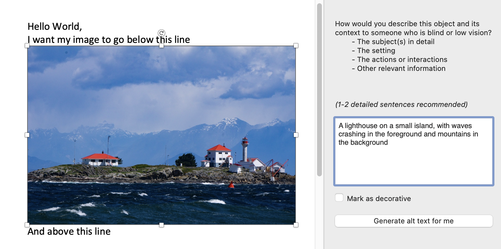Part 4: Additional Alt-Text Features in MS Office
Feature 1
Mark as Decorative is used by some people to indicate when a picture is only decoratives. This can be helpful in very rare cases, including some backgrounds, but in most it eliminates important context. Do not use it for cartoons or emojis thinking that they are not important. This is not inclusive as it eliminates this context from ScreenReaders. People with low vision may not able to join in on the Joke by not knowing that there is a “Winky Emoji” after a joke.
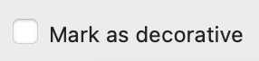Feature 2
I find the Generate alt text more amusing than helpful. It can come up with some interesting ideas for what an image is and what its purpose is in context. It can be a good starting point, but I would be careful with its final descriptions.
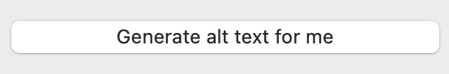Examples
Example 1: Eagle
This is a photo of an eagle, which could be described simply as an “Eagle” but that eliminates context.
Example 2: Scenery
This is a photo of a “Road”, which could be described as a road. Though there is things more to this road that makes it unique.
Action
Take Action
- Try adding alt-text to one image. Once you have done that, the next one will be even easier.
- Try and don't be afraid to make mistakes - that is the best way to learn.
- Are you wondering if the alt-text you wrote makes sense? Ask a friend - read out what you have written and see if they know what the purpose of the image is about. If they don't get it - show them the image and ask their opinion. By doing this we are opening the dialogue around inclusive design with others!